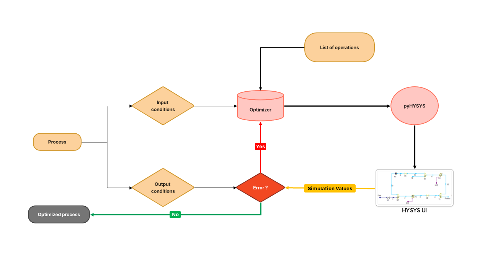
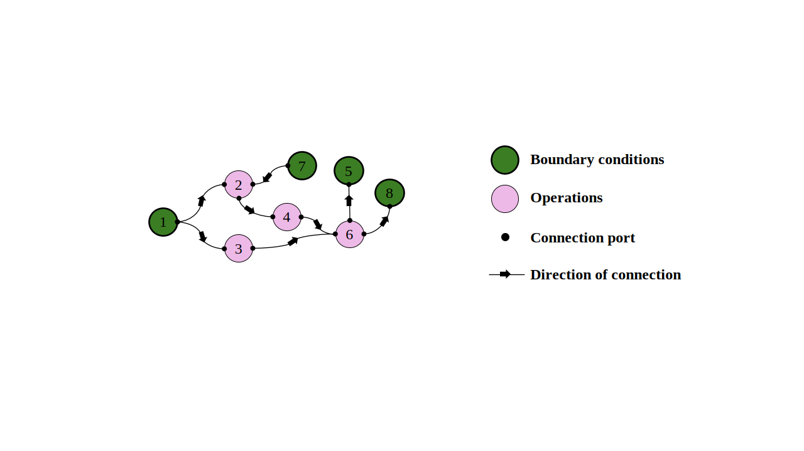

pyhysys API

Overview
PyHYSYS is an innovative engineering framework designed to simplify and optimize complex process designs involving multistage unit operations. It leverages a first-principles optimization approach, breaking down intricate processes into smaller, manageable modules, ensuring precise optimization at each stage.
Key Features
- Modular Process Optimization: Enhances reliability and reduces design uncertainties by optimizing discrete process blocks, enabling engineers to make data-driven, actionable decisions.
- Integration with Aspen HYSYS: Utilizes Aspen HYSYS, an industry-standard simulation tool, seamlessly integrated with Python via the powerful Win32 framework to automate workflows effectively.
- Interactive Graph-based Interface: Employs advanced graph methodologies to visually represent complex operational connections, significantly reducing design redundancy and streamlining user interaction.
- Custom Python API: Provides a robust API, allowing users to efficiently link existing process elements or build new processes incorporating advanced optimization algorithms and AI-driven methodologies.
Benefits
- Accelerates the development of new process designs.
- Eliminates redundant tasks through intelligent automation.
- Enhances overall process efficiency and performance through optimized workflows.
Technologies Used
This project utilized Aspen HYSYS as a simulation tool to model the process systems. In addition, we experimented with various optimization tools to solve process optimization problems.
Tools
- Git & GitHub for version control
- PyTest for testing
- Aspen HYSYS for simulation
- Win32 for automation
- NOMAD, Simcenter Studio & HEEDS for optimization
Implementation Details
The project implements various HYSYS components to model and optimize the compression process. Here's an example of how the components are defined:
# Element 1: Feed
FeedCondition(hysys_id = "feed", flowsheet = hysys.flowsheet,
temperature = 30,
pressure = 101.325,
component_mass_flow = (10000, 0.0, 0.0, 0.0)),
# Element 9: Product
ProductCondition(hysys_id = "product", flowsheet = hysys.flowsheet,
temperature=200.0),
# Element 2: Mixer
Mixer(hysys_id = "mixer_1", flowsheet = hysys.flowsheet),
# Element 3: Pump
Pump(hysys_id = "pump_1", flowsheet = hysys.flowsheet,
pressure_ratio = 2),
# Element 4: Heater
Heater(hysys_id = "heater_1", flowsheet = hysys.flowsheet,
pressure_drop = 10,
temperature_increase = 100),
# Element 5: Separator
Separator(hysys_id = "separator_1", flowsheet = hysys.flowsheet),
# Element 6: Cooler
Cooler(hysys_id = "cooler_1", flowsheet = hysys.flowsheet,
pressure_drop = 10),
# Element 7: Tee
Tee(hysys_id = "tee_1", flowsheet = hysys.flowsheet,
split_ratio = [0.3]),
# Element 8: Valve
Valve(hysys_id = "valve_1", flowsheet = hysys.flowsheet,
pressure_drop = 10)Process Flowsheet
